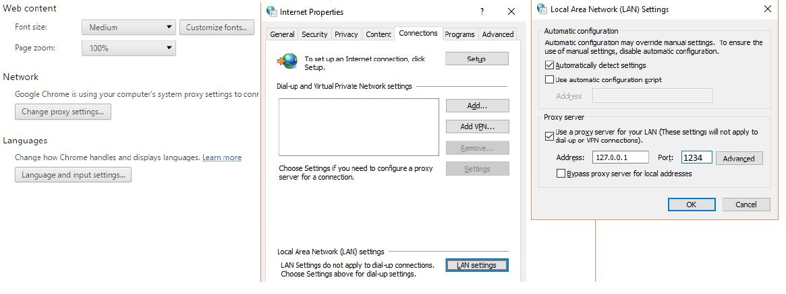

PROJECTS
Proxy Server in Java
The Proxy Server was developed in Java Programming Language for the class “CSCI 846 - Distributed Systems” that I took at NDSU. In this assignment, I implemented HTTP Proxy Server that acts as a mediator between the client (for example, a user’s web browser) and the web server. In the simplest case, instead of sending requests directly to the server the client sends all requests to the proxy. The proxy opens a connection to the server, and passes the client's request. The proxy receives the reply from the server, and then sends that reply back to the client. The proxy is essentially acting like both a HTTP client (to the remote server) and a HTTP server (to the initial client).
The proxy server, implemented in this assignment, also has logging feature that records all the communication between the client and the web server in log file “proxy.log”. The data, recorded in the log file, is represented in the following format:
DATE, BROWSER IP ADDRESS, REQUESTED URL, THE SIZE OF RETURNED OBJECT,
where browserIP is the IP address of the browser,
URL is the URL of the requested website,
size is the size of an object in bytes that was returned from the web server.
For instance: Jan 23 2010 02:51:02 134.129.125.204 http://www.cs.ndsu.edu/ 34314
The instruction on how to run the proxy server on a local computer:
First of all, you will need to configure your web browser. You will need to enable proxy server in your web browser with the following parameters:
IP Address: 127.0.0.1 Port: 1234
Here are the screen shots of the settings that you have to enable in your web browser. You if you don't see the image well you can click the picture and it will be opened in a separate window with higher resolution

After that you will need to open Proxy Server Project in NetBeans and launch the application. The proxy Server will start listening on the port 1234. You will need to open a web browser and enter URL of websites that don’t have secured HTTP connection. In other words, the websites that don’t use HTTPS protocol for connection and the ones that use HTTP protocol only. Here are the example of websites that could be used for this proxy server:
www.ask.com
www.nutrilookup.com
www.tutorialspoint.com
www.learnpython.org etc…
When the proxy server is launched the webpages you requested will be displayed in your web browser; the proxy log will be created if it was not created before and transmitted data will be recorded in the proxy.log file.
You can view THE CODE on my github (just click the highlighted link).
You can download the proxy server created in NetBeans from this link